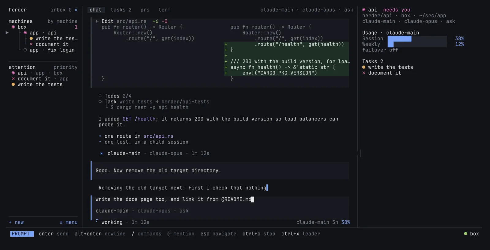
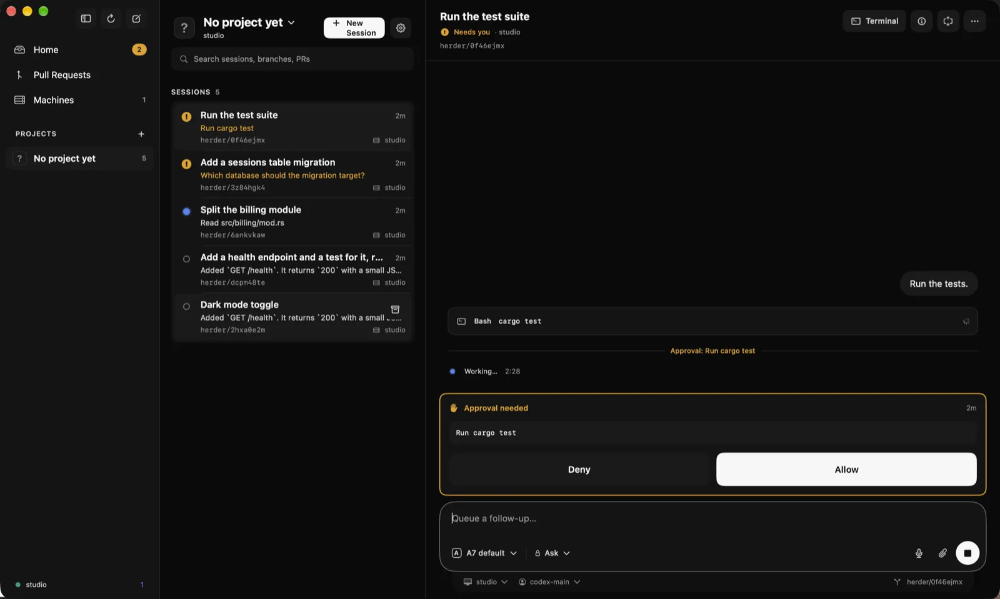
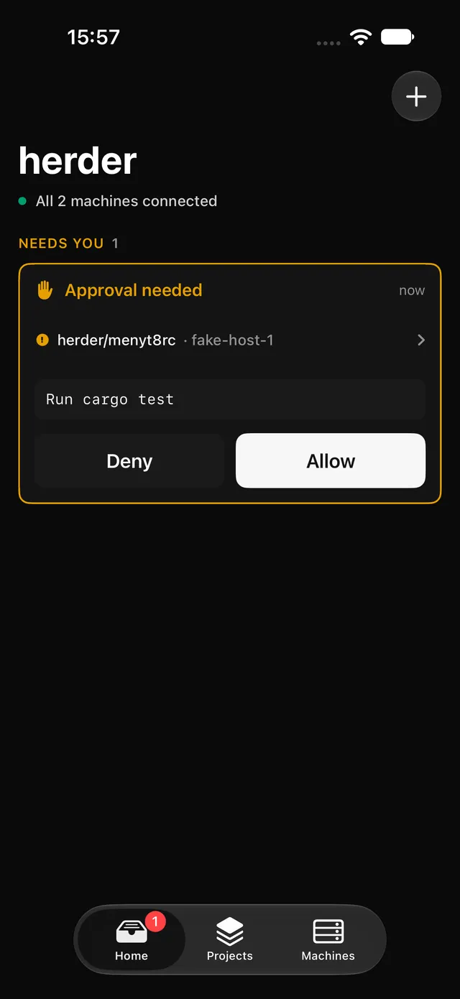
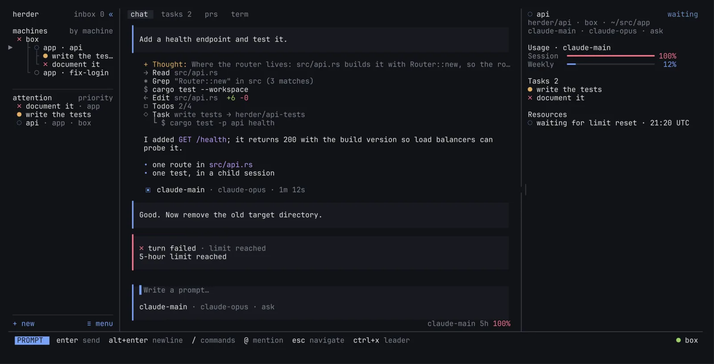
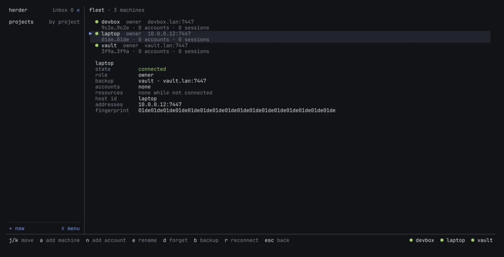

Failover across accounts
A session hits a usage limit, herder rotates it to the next account of that provider. Only then, never pre-emptively. Out of accounts? The session waits for the limit reset and retries by itself.
Every coding agent. Every account. Every machine.
herder drives Claude Code, Codex, Cursor and OpenCode across all your accounts and all your machines. Steer them from a terminal, your Mac or your phone. When an account hits its limit, herder moves the session to the next one.
curl -fsSL https://herder.sh/install | sh
Linux x86_64 and arm64 · Mac app for Apple silicon, not notarized yet · Apache-2.0

One daemon per machine. Your agents run there, in the vendor's own CLI. Every screen you own is a window onto them.
herder daemonHosts the sessions on each Linux box. It runs the unmodified Claude Code, Codex, Cursor or OpenCode CLI, each account under its own config dir, and keeps every session in an append-only journal.
herderBare herder opens the terminal UI. It works over SSH or mosh from a phone: below 65 columns it shows one pane at a time, and every view works with arrows, Tab and Enter.
A native Mac app for Apple silicon, on the same Rust client core. Approve tool calls, follow pull requests, start sessions on any paired machine. The iPhone app shares its code and is not on the App Store yet.
A session hits a usage limit, herder rotates it to the next account of that provider. Only then, never pre-emptively. Out of accounts? The session waits for the limit reset and retries by itself.
Run a daemon on every box you have. Pair once, see every session in one list, by machine or by project. A vault keeps a durable copy of every session journal, and catches up after either side was offline.
The Mac app, the terminal UI, or any phone SSH app. An agent waiting on an approval lands on your Home screen. Allow, deny, answer, move on.
An agent can spawn child sessions, prompt them, wait for them, answer their questions or escalate to you. herder serves the task tools to every agent over MCP.
herder only drives the vendor's unmodified CLI under a per-account config dir. It never reads, stores, copies or relays your provider login. You log in with the vendor's tool, as always.
herder session new, send, wait, status. Every command takes --json and never prompts, so scripts and other agents can drive sessions too.
One view of what every account and machine has used, so you know where the headroom is before you need it.
One library of skills for every agent on every machine. Write it once, every provider gets it.




Three commands to a herd.
curl -fsSL https://herder.sh/install | sh
herder service installInstalls herder and runs its daemon now and at every boot.
herderBare herder is the terminal UI. Add an account with n: the vendor's own login runs, herder just shows you its terminal.
herder pairPrints a link and a QR code. Paste the link into the Mac app's Add Machine, or run herder connect <link> on another computer.
herder runs coding agents across many machines. A daemon on each Linux machine hosts agent sessions in the vendor's own CLI, and you watch and steer them from the herder terminal UI, the Mac app or a phone.
On Linux, run curl -fsSL https://herder.sh/install | sh. It installs a static binary to ~/.local/bin/herder after checking its sha256. Then herder service install runs the daemon now and at every boot, and herder update moves to the latest release.
Claude Code, Codex, Cursor and OpenCode. herder drives each vendor's unmodified CLI, so you keep the agent you already use.
No. herder never reads, stores, copies or relays provider login tokens. Each account is the vendor CLI running under its own config dir, logged in with the vendor's own tool.
When a session hits a provider's usage limit, herder moves it to another account of that provider that still has room. It only reacts to a limit; it never switches accounts ahead of time. With no account left, a session with a known reset time waits and retries on its own.
The Mac app is not notarized yet, so Gatekeeper blocks it on first open. Move herder.app to Applications and run xattr -dr com.apple.quarantine /Applications/herder.app, or open it once and choose Open Anyway in System Settings › Privacy & Security.
The iPhone app is built but not on the App Store yet. Meanwhile, run herder over SSH or mosh from a phone SSH app such as Termius or Moshi; the terminal UI adapts to narrow screens.
Nothing. herder is free and open source under the Apache-2.0 licence. You pay your agent providers as you do today.
herder is pre-1.0 and moves fast. Expect rough edges, and things changing under you. Bugs and ideas go to GitHub issues.